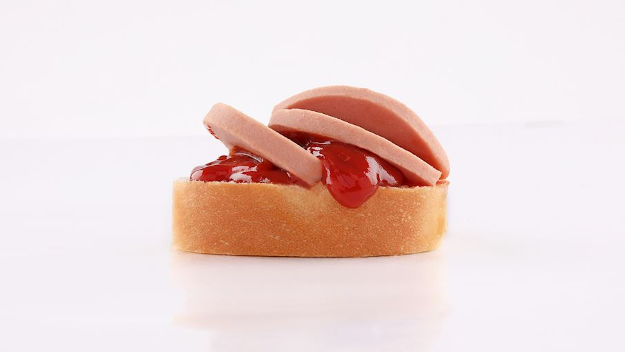
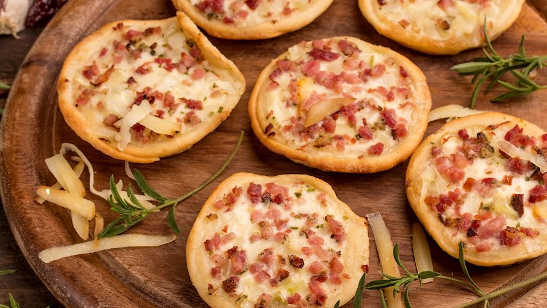
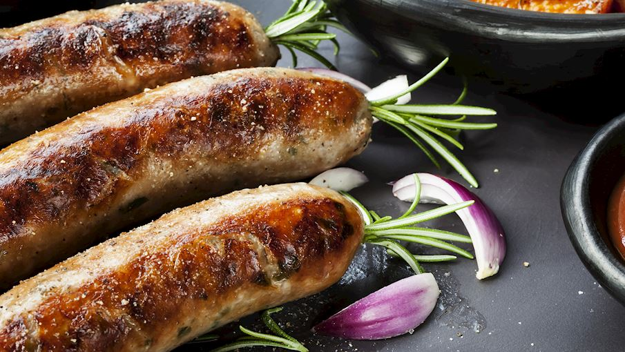

Most Popular Food in USA
hamburger:Hamburger is considered one of the traditional foods in America and the most popular is the most popular hamburger is the hamburger with cheese
It is a piece of meat, to which tomatoes, lettuce, pickles, onions and sometimes cheddar cheese are added, and it is served in its own round bread.
Most Popular Food in Asia

Chili Crab in Singapore: Stir-fried crab in a tomato based, sweet, savoury and slightly hot chilli sauce. Break into its claws with crab crackers and suck at the flesh. The popular crab choice in Singapore is the mud crab but expect all sorts of shapes and sizes.
Most Popular Food in Europe

Potica in Slovenia:One of the best dessert foods on this list, this traditional nut roll is made of sweet dough that is rolled out very thinly, spread with a paste made from ground nuts and a sweetener like honey, rolled up into a log and baked.
Most Popular Food in Australia

Hot Jam Donuts:Hot jam donut is an Australian specialty hailing from Melbourne, which is why it's also affectionately known as the Melbourner. Unlike most other donuts, these ones are always served hot, usually from the window of a street food van at the Queen Vic Market.

Continental Roll:Continental roll is an Australian sandwich influenced by Italian cuisine. The sandwich consists of a crusty and chewy bread roll filled with cheese, Italian cold cuts and a variety of condiments.

Fritz and Sauce:Fritz and sauce is a classic Australian sandwich that's especially beloved by children. It consists of two slices of bread, a bit of tomato sauce, and fritz. Fritz is a type of cheap sausage meat that's believed to contain beef, lamb, and pork trimmings, starch, flour, and seasonings.

Cheese and Bacon Roll:These fluffy rolls are a favorite of numerous children throughout Australia. The dough is sprinkled with bits of bacon and cheese, then baked in an oven until the cheese melts and the rolls are golden in color. For a filling meal, it is recommended to serve cheese and bacon rolls with a bowl of soup.

Barbecue Snags:Barbecue snags are thick Australian sausages, usually with a mild flavor and made with beef, pork, garlic, and onions.
Most Popular Food in Africa
Fekkas:These traditional Moroccan twice-baked cookies come in both sweet and savory versions. They are prepared with shortbread or yeasted dough that is usually enriched with orange blossom water, aniseed, or citrus zest, as well as toasted nuts and dried fruit such as almonds, walnuts, raisins, pistachios, or sesame seeds.
Fricassee:Fricassee is a traditional Tunisian sandwich that's packed with flavor, but also with lots of calories. The base is made with flour, eggs, oil, salt, water, and yeast, and it is then shaped into round or elongated rolls which are fried in hot oil and filled with tuna, hummus, boiled eggs, capers, olives, harissa, and boiled potatoes.

Banga Soup:Banga or ofe akwu is a flavorful Nigerian soup made with palm fruit, beef or dried fish, vegetables, and seasonings such as salt and chili pepper. The soup is traditionally paired with various fufu dishes. The name of the dish is derived from two words: ofe, meaning soup or stew, and akwu, meaning palm fruit.

Githeri:Githeri is a Kenyan staple food consisting of beans and maize that are stewed with onions, tomatoes, and sometimes potatoes or meat chunks. The stew is often flavored with cumin, turmeric, or chili powder. It is traditionally served on its own, although it can be served with rice or crusty bread on the side.
Shiro:Shiro is an Ethiopian stew made with chickpeas or broad beans as main ingredients, along with garlic, onions, ginger, tomatoes, and chili peppers. The chickpeas give this stew a nice texture and nutty flavor, but they can be replaced by shiro powder, which is a combination of chickpea flour and various spices.
Rechta:Rechta is a traditional Algerian dish consisting of thin and flat noodles and chicken sauce. The noodles are made with a combination of flour, salt, water, and ghee, while the sauce is made with chicken pieces, onions, garlic, oil, chickpeas, ras el hanout, cinnamon, turnips, potatoes, and zucchini.
Most Popular Food in south-america

Arrumadinho:Arrumadinho is a complex Brazilian dish that is usually served as an appetizer. The dish is a combination of four elements that are neatly organized and served together as a complete meal.
Sopa de mondongo:Sopa de mondongo is a term that is widely used all across Central and South America when referring to a hearty tripe and vegetable soup. The star of the dish is beef or pork tripe, the rather tough edible part of animal stomach which is cut into smaller pieces and cooked with other ingredients in a flavorful broth.